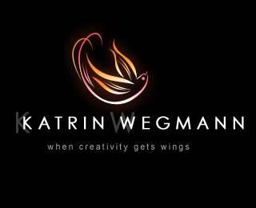

<!DOCTYPE html>
<html lang="en">
<head>
	<meta charset="UTF-8">
	<title>照片墙</title>
	<style type="text/css">
		body{
			background: #6F6A6A;
		}
		ul{
			list-style:none;
			width:1000px;
			margin: 30px auto;
			border: 2px solid #F3EC06;
			height: 490px;
		}
		li{
			float: left;
			width: 200px;
			height: 150px;
			margin: 5px;
			border: 2px solid #CEF60D;
		}
		#btn_box{
			text-align: center;
		}
	</style>
</head>
<body>
	<section class="wrap">
		<div id="btn_box">
			<input type="button" value="打乱顺序" />
		</div>
		<ul>
			<!-- <li>
				
				<span>1-aaa</span>
			</li>
			<li>
				
				<span>2-bbb</span>
			</li>
			<li>
				
				<span>3-ccc</span>
			</li>
			<li>
				
				<span>4-ddd</span>
			</li>
			<li>
				
				<span>5-eee</span>
			</li>
			<li>
				
				<span>6-fff</span>
			</li>
			<li>
				
				<span>7-ggg</span>
			</li>
			<li>
				
				<span>8-hhh</span>
			</li> -->
		</ul>
	</section>
</body>
</html>
<script src="tools.js"></script>
<script src="MTween3.js"></script>
<script type="text/javascript">
	var btn_box=tools.$('#btn_box');
	var input=tools.$('input',btn_box);
	var aSpan=tools.$('span');
	var aImg=tools.$('img');
	var ul=tools.$('ul')[0];
	var arr=[0,1,2,3,4,5,6,7,8,9,10,11];
	/***********************生成结构**********************/
	var html='';
	for(var j=11;j>=0;j--){
		html+='<li style="background:url(img/'+j+'.jpg);"></li>';			
	}
	ul.innerHTML=html;
/*************************转换布局（所有的li转换成定位元素）*****************************/
	var allLi=tools.$('li',ul);			//获取所有的li
	var arr1=[];						//定义一个空数组来存放每个li在可视区原来的位置
	//for循环所有的li
	for(var j=0;j< allLi.length;j++){
	    arr1.push({
	    	left:allLi[j].offsetLeft,
			top:allLi[j].offsetTop	
	    })
	}
	//转换成定位元素以及定位后的位置
	for(var i=0;i<allLi.length;i++){
	    allLi[i].style.position="absolute";
	    allLi[i].style.left=arr1[i].left+"px";
	    allLi[i].style.top=arr1[i].top+"px";
	    allLi[i].style.margin=0;
	    allLi[i].style.zIndext=0;
	}
	input[0].onclick=function(){
		arr1.sort(function (){
			//随机打乱数组，return后面的大于0等于小于0的数应该数随机的
			//正数或负数随机出现的
			return  0.5 - Math.random()
		});
		for(var i=0;i<allLi.length;i++){
			if(allLi[i].timer) return;		//解决狂点问题
		    MTween(allLi[i],{left:arr1[i].left,top:arr1[i].top},1000);
		}
	}
	/*************************获取元素相对视口位置函数*************************/
	function getRect(obj){
		return obj.getBoundingClientRect();//实时获取元素宽，高，等信息；
	}
	/***************************获取元素四个方向的位置********************************/
	function offSet(obj,obj1){
		//获取obj的四个方向的位置
		var objL = getRect(obj).left;
		var objR = getRect(obj).right;
		var objT = getRect(obj).top;
		var objB = getRect(obj).bottom;
		//获取obj1的四个方向的位置
		var obj1L = getRect(obj1).left;
		var obj1R = getRect(obj1).right;
		var obj1T = getRect(obj1).top;
		var obj1B = getRect(obj1).bottom;
		//判断没有碰撞的区域
		if(objR < obj1L || objL > obj1R || objB < obj1T || objT > obj1B ){
			return false;
		}else{
			return true;
		}
	}
/*************************为每个li绑定鼠标事件处理****************************/
var n=0;
for(var i=0;i<allLi.length;i++){
    allLi[i].index=i;          //记录当前鼠标按下的下标值
    allLi[i].addEventListener("mousedown",function(ev){
    	//获取到鼠标距离元素边界的距离
		var disX = ev.clientX - this.offsetLeft;
		var disY = ev.clientY - this.offsetTop;

		this.style.zIndex = "10";			//把当前元素的曾提升
		
		//获取当前点击元素的原坐标值
		var curLeft=this.offsetLeft;
		var curTop=this.offsetTop;

		//把当前移动的元素碰到的元素都放在数组中
		var arr2 = [];
		var num = +Infinity;
		var obj = null;
		//把当前下标值赋给n
		n=this.index;


		//利用事件委托，把移动事件加在document身上
		document.onmousemove=function(ev){
			//获取移动元素的实时坐标
			var nowX=ev.clientX - disX;
			var nowY=ev.clientY-disY;
			//判断li元素可移动边界，保证在ul范围内移动
			if(nowX<getRect(ul).left) nowX=getRect(ul).left;
			if(nowY<getRect(ul).top) nowY=getRect(ul).top;
			if(nowX>getRect(ul).right-allLi[n].offsetWidth) nowX=getRect(ul).right-allLi[n].offsetWidth;
			if(nowY>getRect(ul).bottom-allLi[n].offsetHeight) nowY=getRect(ul).bottom-allLi[n].offsetHeight;

			 //当前被拖拽原素的实时坐标
			 allLi[n].style.left = nowX +"px" ;
			 allLi[n].style.top = nowY +"px" ;

		 	arr2.length = 0;
			num = +Infinity;
			obj = null;
			for(var j=0;j< allLi.length;j++){
			    if(offSet(allLi[n],allLi[j])){			//调用碰撞函数
			    	if(allLi[j]!==allLi[n]){			//排除被拖拽的元素
			    		arr2.push(allLi[j]);			//把被碰到的元素push进arr2中
			    	}	
			    }			

			}

			//找到拖动元素的中心点
			var circleX = getRect(allLi[n]).left + allLi[n].offsetWidth/2;
			var circleY = getRect(allLi[n]).top + allLi[n].offsetHeight/2;	

			//循环被碰撞元素的数组，找出距离被拖拽原素最近的那个
			for(var l=0;l<arr2.length;l++){
			    //找到被碰撞元素的中心点
			    var circle1X = getRect(arr2[l]).left + arr2[l].offsetWidth/2;
				var circle1Y = getRect(arr2[l]).top + arr2[l].offsetHeight/2;

				//计算两中心点的距离
				var siteX = Math.pow(Math.abs(circleX - circle1X),2);
				var siteY = Math.pow(Math.abs(circleY - circle1Y),2);
				var s = siteX + siteY;
				//将s与num比较，找出最小值
				if(num>s) {
					num=s;
					obj=arr2[l];
				}
			}

			//当鼠标被抬起时的处理
			document.onmouseup=function(){
				document.onmousemove= null;
				document.onmouseup=null;		//清空事件处理函数
				if(obj){
					//记录被碰撞元素的坐标
					var objLeft = obj.offsetLeft;
					var objTop = obj.offsetTop; 
					MTween(obj,{left:curLeft,top:curTop},500,"linear");
					MTween(allLi[n],{left:objLeft,top:objTop},500,"linear",function(){
						//把所有的元素层级重置为1
						for(var j=0;j< allLi.length;j++){
						    allLi[j].style.zIndext=1;
						}
					})
				}else{
					MTween(allLi[n],{left:curLeft,top:curTop},500,"linear",function(){
						//把所有的元素层级重置为1
						for(var j=0;j< allLi.length;j++){
						    allLi[j].style.zIndext=1;
						}
					})
				}
			}
		}
		ev.preventDefault();
    },false)
}	
</script>
